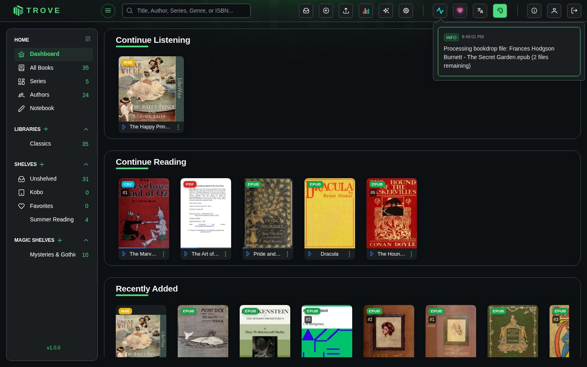
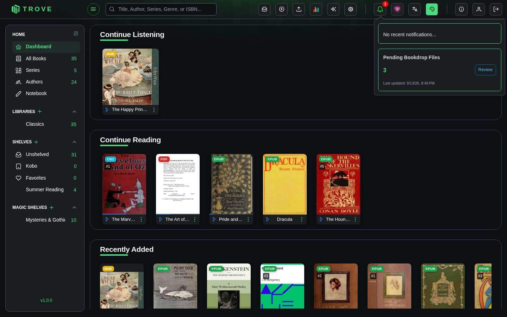
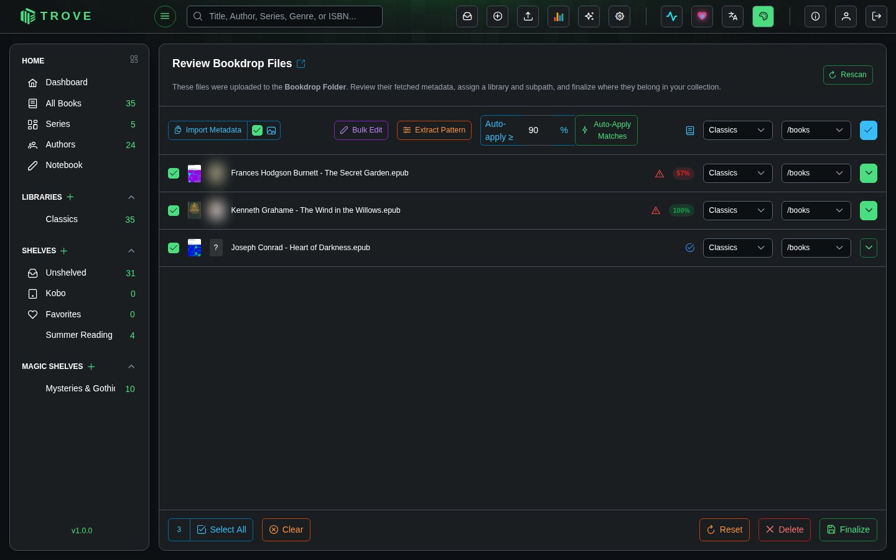
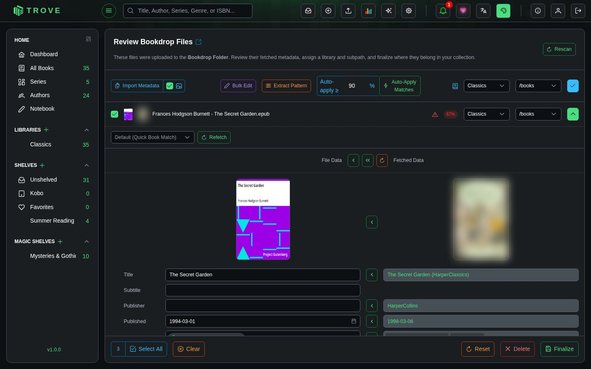
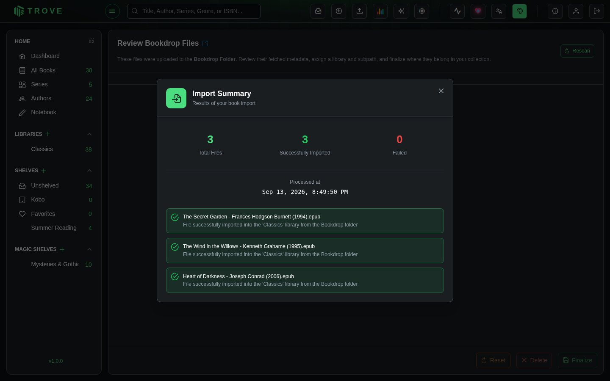

Bookdrop
Bookdrop is an inbox for new books. Drop files into its folder and Trove reads them, looks up their details online, and waits for you to check them over before moving them into a library, named and filed the way you like.

The Bookdrop folder
With Docker, mount a folder at /bookdrop:
volumes:
- ./bookdrop:/bookdropA native install uses /srv/trove/bookdrop. Trove needs to be able to read and delete files there, because it removes them once they're imported.
Copy in any files Trove reads (EPUB, PDF, MOBI, AZW3, FB2, CBZ, CBR, CB7, M4B, M4A, MP3, Opus), one at a time or whole folders at once. Folders of audio tracks are taken as one audiobook, as in a library. For example:
bookdrop/
├── Frances Hodgson Burnett - The Secret Garden.epub
├── Joseph Conrad - Heart of Darkness.epub
└── Kenneth Grahame - The Wind in the Willows.epubYou can also upload into Bookdrop from the upload button in the top bar.
While Trove works
Each file is read for the details it carries (title, authors, cover and so on). If Automatic Metadata Download is on for Bookdrop in Metadata settings, Trove also looks the book up with your metadata sources. The activity button in the top bar shows progress, and once files are ready a Pending Bookdrop Files card appears there with a Review button.

Reviewing the files
The review page lists every waiting file. Tick the ones to work on (Select All ticks every file, across pages), then set where they go and which details to keep.

The toolbar
| Control | What it does |
|---|---|
| Import Metadata | Uses the fetched details for the selected files. The picture toggle beside it decides whether fetched covers come too. |
| Bulk Edit | Sets the same series, publisher, authors, tags and so on for all selected files. See Bookdrop tools. |
| Extract Pattern | Reads details out of the file names, such as {Authors} - {Title}. See Bookdrop tools. |
| Auto-apply ≥ and Auto-Apply Matches | Uses the fetched details for every file whose match confidence is at or above the percentage you set (90% to start with), without opening each one. |
| Library, Subpath and ✓ | Choose a library and one of its folders, then click ✓ to send all selected files there. |
Each file
A row shows the file's own cover, the cover Trove found online, the file name, and a match confidence badge: how closely the online result's title and authors match the file's. A warning triangle means the fetched details haven't been used yet. Each file can have its own library and folder, overriding the toolbar.
Comparing details
Click the arrow at the end of a row (or the file name) to compare what the file says with what was found online, field by field.

- The ‹ beside a field copies the online value into that field. Changed fields are highlighted.
- At the top, ‹ copies only the fields that are empty, « copies every field, and the circular arrow puts everything back.
- If the match is wrong, pick a different source from the menu above the details and click Refetch. Default (Quick Book Match) asks your sources in their usual order.
The bottom bar
| Button | What it does |
|---|---|
| Select All / Clear | Tick or untick every file |
| Reset | Throws away your changes to the selected files' details |
| Delete | Removes the selected files from Bookdrop, deleting them from the folder |
| Finalize | Imports the selected files into their libraries (every selected file needs a library and folder) |
Finishing the import
Click Finalize and confirm. Trove writes the chosen details into each file if writing metadata to files is on, names it with the library's file naming pattern, and moves it into the library. The summary shows what was imported and anything that failed.

Imported files are removed from the Bookdrop folder. If a book's library is on a network share, each file is copied across and verified before the Bookdrop copy is removed (see Network storage).